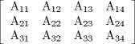

| 16.12. MATRIX | ||
|---|---|---|
 | Chapter 16. Canonical Forms |  |
| 16.12. MATRIX | ||
|---|---|---|
| | Chapter 16. Canonical Forms | |
Canonical form is (A11, A12, A13, A14, A21, A22, A23, A24, A31, A32, A33, A34)
where the elements define the following matrix:

| |  | |
| 16.11. VECTOR |  | 16.13. SPHERE |